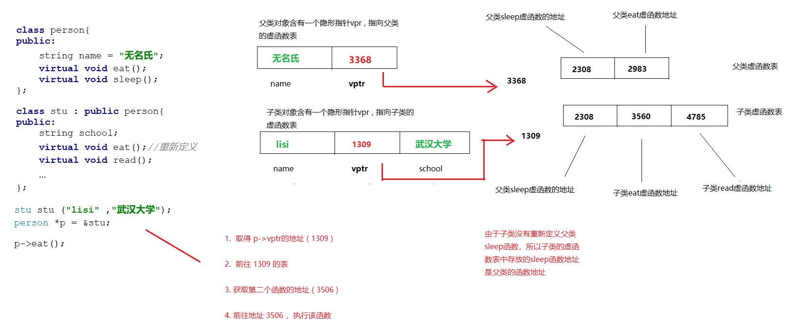

一、多态#
1. 什么是多态#
多态按字面的意思就是多种形态。当类之间存在层次结构，并且类之间是通过继承关联时，就会用到多态。
C++ 多态意味着调用成员函数时，会根据调用函数的对象的类型来执行不同的函数。为了更为详细的说明多态，此处我们划分为静态多态和 动态多态 两种状态来讲解
1. 静态多态#
静态多态是编译器在编译期间完成的，编译器会根据实参类型来选择调用合适的函数，如果有合适的函数可以调用就调，没有的话就会发出警告或者报错 。 该种方式的出现有两处地方： 函数重载 和 泛型编程 | 函数模板 .
1 2 3 4 5 6 7 8 9 10 11 12 13 14 15 16 17 | |
2. 动态多态#
它是在程序运行时根据父类的引用（指针）指向的对象来确定自己具体该调用哪一个类的虚函数。
1 2 3 4 5 | |
动态多态的必须满足两个条件：
- 父类中必须包含虚函数，并且子类中一定要对父类中的虚函数进行重写。
- 通过父类对象的指针或者引用调用虚函数。
2. 联编机制#
1. 父类指针指向子类对象#
通常情况下，如果要把一个引用或者指针绑定到一个对象身上，那么要求引用或者指针必须和对象的类型一致。 不过在继承关系下，父类的引用或指针可以绑定到子类的对象，这种现象具有欺骗性，因为在使用这个引用或者指针的时候，并不清楚它所绑定的具体类型，无法明确是父类的对象还是子类的对象。
1 2 3 4 5 6 7 8 9 10 11 12 13 14 15 16 17 18 19 20 21 22 23 24 25 26 27 28 | |
2. 静态类型和动态类型#
只有在继承关系下，才需要考虑静态和动态类型，这里仅仅是强调类型而已。所谓的
静态类型指的是，在编译时就已经知道它的变量声明时对应的类型是什么。而动态类型则是运行的时候，数据的类型才得以确定。只有在
引用或者指针场景下，才需要考虑 静态或者动态类型。因为非引用或者非指针状态下，实际上发生了一次拷贝动作。
- 静态类型
静态类型：不需要运行，编译状态下即可知晓具体的类型
1 2 3 4 5 6 7 8 9 10 11 12 | |
- 动态类型
只有真正运行代码了，才能知晓具体的类型
1 2 3 4 5 6 7 8 9 10 11 12 13 14 15 16 17 18 19 20 21 | |
3. 父类指针指向子类对象#
父类的引用或指针可以绑定到子类的对象 ， 那么在访问同名函数时，常常出现意想不到的效果。
1 2 3 4 5 6 7 8 9 10 11 12 13 14 15 16 17 18 19 20 21 22 23 24 | |
4. 静态联编和动态联编#
程序调用函数时，到底执行哪一个代码块，由编译器来负责回答这个问题。将源码中的函数调用解释为执行特定的函数代码，称之为
函数名联编。在C语言里面，每个函数名都对应一个不同的函数。但是由于C++里面存在重载的缘故，编译器必须查看函数参数以及函数名才能确定使用哪个函数，编译器可以在编译阶段完成这种联编，在编译阶段即可完成联编也被称为：
静态联编 | 早期联编。 程序在运行期间才决定执行哪个函数，这种称之为动态联编 | 晚期联编
1 2 3 4 5 6 7 8 9 10 11 12 13 14 15 16 17 18 19 20 21 22 23 24 25 26 27 28 29 30 31 32 33 | |
5. 为什么要区分两种联编#
动态联编在处理子类重新定义父类函数的场景下，确实比静态联编好，静态联编只会无脑的执行父类函数。但是不能因此就否定静态联编的作用。动态联编状态下，为了能够让指针顺利访问到子类函数，需要对指针进行跟踪、这需要额外的开销。但是并不是所有的函数都处于继承状态下，那么此时静态联编更优秀些。
编写c++代码时，不能保证全部是继承体系的父类和子类，也不能保证没有继承关系的存在，所以为了囊括两种情况，c++ 才提供了两种方式。
正所谓两害相权取其轻，考虑到大部分的函数都不是处在继承结构中，所以效率更高的静态联编也就成了默认的的选择。
3. 虚函数#
1. 虚函数入门#
C++中的虚函数的作用主要是实现了多态的机制 ， 有了虚函数就可以在父类的指针或者引用指向子类的实例的前提下，然后通过父类的指针或者引用调用实际子类的成员函数。这种技术让父类的指针或引用具备了多种形态。定义虚函数非常简单，只需要在函数声明前，加上
virtual关键字即可。 在父类的函数上添加 virtual 关键字，可使子类的函数也变成虚函数。如果基类指针指向的是一个基类对象，则基类的虚函数被调用 ，如果基类指针指向的是一个派生类对象，则派生类的虚函数被调用。
1 2 3 4 5 6 7 8 9 10 11 12 13 14 15 16 17 18 19 20 21 22 23 24 25 26 27 28 | |
2. 虚函数的工作原理#
了解虚函数的工作原理，有助于理解虚函数。
通常情况下，编译器处理虚函数的方法是： 给每一个对象添加一个隐藏指针成员，它指向一个数组，数组里面存放着对象中所有函数的地址。这个数组称之为虚函数表（virtual function table ） 。表中存储着类对象的虚函数地址。
父类对象包含的指针，指向父类的虚函数表地址，子类对象包含的指针，指向子类的虚函数表地址。
如果子类重新定义了父类的函数，那么函数表中存放的是新的地址，如果子类没有重新定义，那么表中存放的是父类的函数地址。
若子类有自己虚函数，则只需要添加到表中即可。

3. 构造函数可以是虚函数吗#
构造函数不能为虚函数 , 因为虚函数的调用，需要虚函数表(指针)，而该指针存在于对象开辟的空间中，而对象的空间开辟依赖构造函数的执行，这就是鸡和蛋的矛盾问题了。
1 2 3 4 5 6 7 8 9 10 11 12 13 14 15 16 | |
4. 析构函数可以是虚函数吗#
在继承体系下， 如果父类的指针可以指向子类对象，这就导致在使用
delete释放内存时，却是通过父类指针来释放，这会导致父类的析构函数会被执行，而子类的析构函数并不会执行，此举有可能导致程序结果并不是我们想要的。究其原因，是因为静态联编的缘故，在编译时，就知道要执行谁的析构函数。为了解决这个问题，需要把父类的析构函数变成虚拟析构函数，也就是加上
virtual的定义。一旦父类的析构函数是虚函数，那么子类的析构函数也将自动变成虚函数。一句话概括： 继承关系下，所有人的构造都不能是虚函数，并且所有人的析构函数都必须是虚函数。
只要在父亲的析构函数加上 virtual ，那么所有的析构函数都变成 虚函数
1 2 3 4 5 6 7 8 9 10 11 12 13 14 15 16 17 18 19 20 21 22 23 24 25 26 27 28 29 | |
4. override 关键字#
在继承关系下，子类可以重写父类的函数，但是有时候担心程序员在编写时，有可能因为粗心写错代码。所以在C++ 11中，推出了
override关键字，用于表示子类的函数就是重写了父类的同名函数 。 不过值得注意的是，override标记的函数，必须是虚函数。
override并不会影响程序的执行结果，仅仅是作用于编译阶段，用于检查子类是否真的重写父类函数
1 2 3 4 5 6 7 8 9 10 11 12 13 14 15 16 17 18 | |
5. final 关键字#
在c++11 推出了final关键字，其作用有两个： (1)、禁止虚函数被重写；(2)、禁止类被继承。
注意： 只有虚函数才能被标记为final ，其他的普通函数无法标记final。
- 标记在类上
1 2 3 4 5 6 7 8 9 | |
- 标记在函数上
1 2 3 4 5 6 7 8 9 10 11 12 | |
6. =delete 和 =default#
这两个关键字平常使用的不多，一般出现在类的特殊成员函数上。=delete 用于表示该函数禁止被调用，=default 以及使用编译器默认提供的函数功能。
1. =delete#
1 2 3 4 5 6 7 8 9 10 11 12 13 14 15 16 17 18 19 20 21 22 23 24 25 26 27 28 29 30 31 32 33 34 | |
2. =default#
一旦定义了有参构造函数之后，编译器将不会替我们生成无参构造函数 。 此时可以自己编写无参构造函数（哪怕函数体是空的），但是此举增加了程序员的编程工作量。更值得一提的是，手动定义的无参构造函数的代码执行效率要低于编译器自动生成的无参构造函数。
1 2 3 4 5 6 7 8 9 10 11 12 13 14 15 16 17 18 19 20 21 22 23 24 25 26 27 28 29 30 31 32 | |
7. 纯虚函数#
纯虚函数是一种特殊的虚函数，C++中包含纯虚函数的类，被称为是“抽象类”。抽象类不能使用new出对象，只有实现了这个纯虚函数的子类才能new出对象。C++中的纯虚函数更像是“只提供声明，没有实现”，是对子类的约束。
纯虚函数就是没有函数体，同时在定义的时候，其函数名后面要加上“= 0”。
1 2 3 4 5 6 7 8 9 10 11 12 13 14 15 16 17 18 19 20 21 22 23 24 25 26 27 28 29 30 31 32 | |
抽象类的一些特征
- 如果有一个类当中有纯虚函数，那么这个类就是抽象类
- 抽象类是无法创建对象的，因为一旦能够创建对象，里面的纯虚函数没有函数体，也就不知道要执行什么逻辑了，所以禁止抽象类创建对象。
- 抽象类当中也可以有普通的成员函数，虽然父类不能创建对象，但是子类可以创建，所以这些函数可以由子类访问。
- 如果一个子类继承了一个父类（父类是抽象类），那么子类就必须重写所有的纯虚函数，否则视子类为抽象类，因为继承体系下，等同于子类拥有了和父类一样的代码。
8. 抽象类和接口#
所谓接口，其实就是用于描述行为和功能，并不会给出具体的实现。C++中没有提供类似
interface这样的关键字来定义接口 ， 纯虚函数往往承担起了这部分功能，可以看成是对子类的一种约束。抽象类可以用来定义一种事物的行为特征，洗衣机： 洗衣服。
1 2 3 4 5 6 7 8 9 10 11 | |